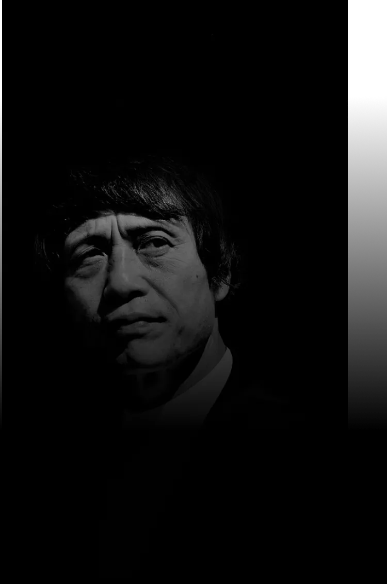

ARCHITECTE
TADAO ANDO
Tadao Ando, architecte japonais renommé, est célèbre pour son style minimaliste et son utilisation créative du béton. Né en 1941, il a remporté de nombreux prix pour son approche architecturale distinctive.

Tadao Ando, architecte japonais renommé, est célèbre pour son style minimaliste et son utilisation créative du béton. Né en 1941, il a remporté de nombreux prix pour son approche architecturale distinctive.
Découvrez l'univers envoûtant de l'architecte renommé Tadao Ando au sein de notre exposition exclusive. Du 13 avril au 23 juin 2024, la Fondation Cartier à Paris ouvre ses portes pour révéler une rétrospective captivante de l'œuvre de cet artiste visionnaire. Explorez les détails essentiels de cet événement incontournable, des horaires d'ouverture aux tarifs d'entrée, et plongez dans la beauté intemporelle de la création architecturale. Réservez votre place dès maintenant et préparez-vous à être transporté dans l'univers unique de Tadao Ando.

Rejoignez-nous du 13 avril au 23 juin 2024 à la Fondation Cartier, 261 Bd Raspail, 75014 Paris, pour une immersion exceptionnelle dans l'univers de l'architecte Tadao Ando. Découvrez la magie de ses créations dans ce lieu emblématique, au cœur de la scène artistique parisienne. Un rendez-vous à ne pas manquer pour les amateurs d'architecture et de beauté créative.

L’exposition Tadao Ando est ravie de vous accueillir tous les jours de 11h à 20h, sauf le lundi et durant la Nocturne le mardi, jusqu'à 22h

PLEIN TARIF :
11€
TARIFS RÉDUITS :
7,50€
RÉDUCTION 13-25 ANS :
5€
FONDATION CARTIER PASS :
18€ - 15€
MOINS DE 13 ANS :
Gratuit